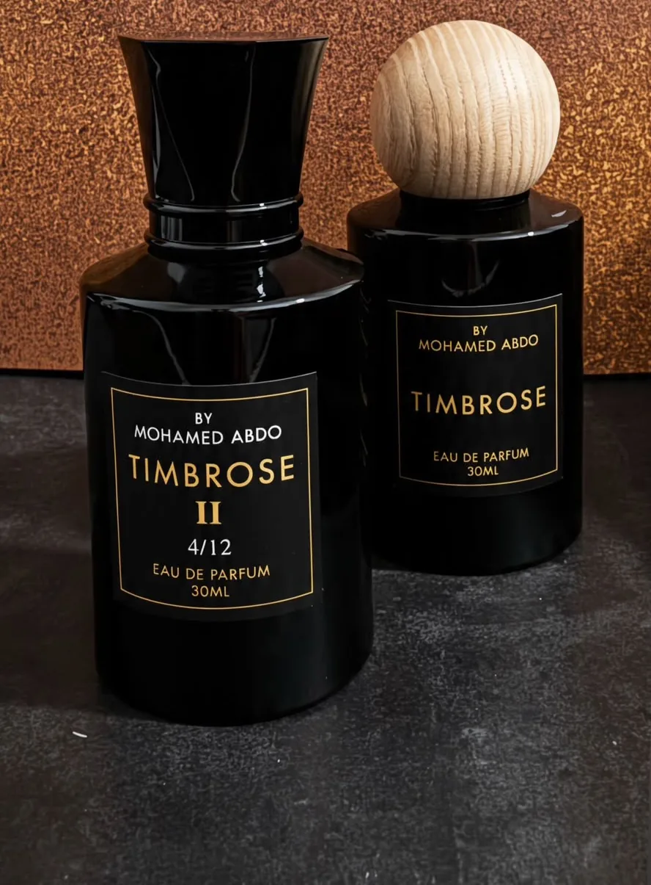

محمد عبده
Mohamed Abdoالمؤسس والعطّار · مايدي هاوس
مصمم عطور صومالي، تركيباته مبتكرة بطابع كلاسيكي. أسّس مايدي هاوس في مقديشو ليحمل العطر الصومالي إلى العالم.
تؤمن الدار بأن العطر فنٌّ قبل أن يكون منتجاً.
تعلّم محمد عبده تصميم العطور عبر دورات في هذا المجال.
ابتكر تركيبات عطرية أصيلة، وتعاون مع دور عطور في أنحاء الخليج العربي، ويعمل اليوم مستشاراً في ابتكار العطور.
في مايدي هاوس يقود الأتيليه، حيث تأتيه العلامات لتحصل على عطر خاص بها، ويوقّع مجموعة خاصة باسمه.
عطوره
تركيبات صمّمها محمد عبده. يُعرض عطرا تيمبروز عبر الأتيليه تركيبتين جاهزتين للعلامات، ويوجد تيمبروز ٢ أيضاً في مجموعته الخاصة زجاجاتٍ مرقّمة.

السيرة الذاتية
تُنشر السيرة كاملة هنا. وما نستطيع ذكره الآن:
- التدريبدورات في تصميم العطور
- التعاوندور عطور في أنحاء الخليج العربي
- اليوممستشار ابتكار عطور؛ ومؤسس مايدي هاوس، مقديشو
- التواريخ والتفاصيلتأتي من محمد عبده
الأرشيف والمقابلات والمقالات
أرشيف خاص من الصور، والمقابلات التي أجراها، والمقالات التي كُتبت عنه. يمتلئ هذا الجزء كلما وصلت المواد.
الأرشيف
صور من المختبر والأشجار والعمل. قريباً.
المقابلات
مقابلات صحفية ومرئية. قريباً.
المقالات
كتابات له وعنه. قريباً.